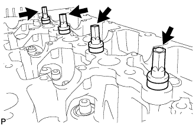
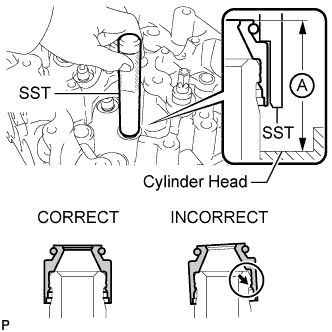
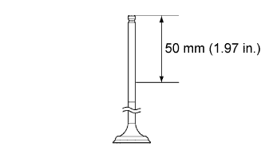
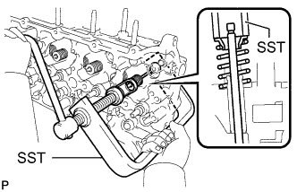
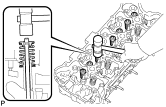

CYLINDER HEAD > REASSEMBLY |
| 1. INSTALL NOZZLE HOLDER CLAMP SEAT |
 |
Install the nozzle holder clamp seat.
| 2. INSTALL VALVE SPRING SEAT PLATE WASHER |
 |
| 3. INSTALL VALVE STEM OIL SEAL |
 |
Apply a light coat of engine oil to the valve guide bush.
Using SST, push in a new valve stem oil seal.
Check that the protrusion height of the valve stem oil seal labeled A in the illustration is as specified.
| 4. INSTALL VALVE |
 |
Apply plenty of engine oil to the tip area of the valve as shown in the illustration.
 |
Place the cylinder head on a wooden block.
Install the valve, inner compression spring and valve spring retainer to the cylinder head.
Using SST, compress the inner compression spring and place the valve spring retainer lock around the valve stem.
 |
Using a plastic-faced hammer, lightly tap the valve stem tip to ensure a proper fit.